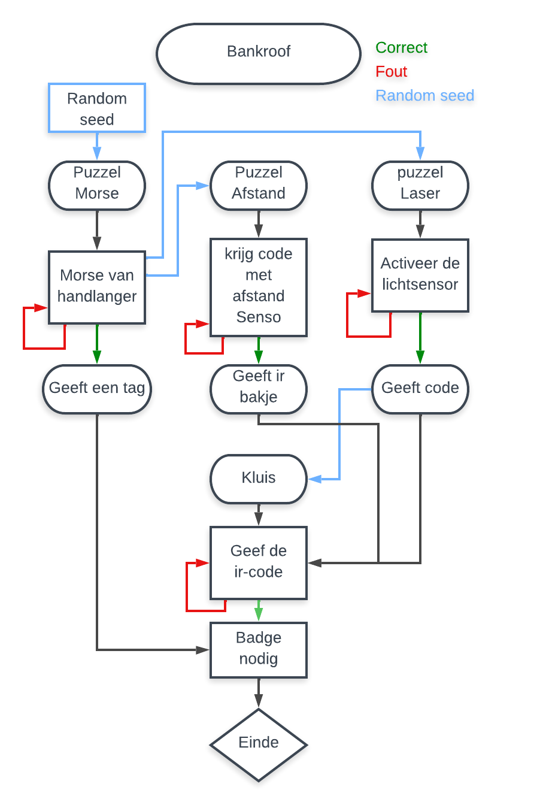

Introductie
Je wilt inbreken in een bank. Je moet eerst de juist keycard vinden van de bankmedewerkers. Als je de keycard hebt kan je de code van het alarm uitschakelen. Hierna zal je de lazers omzeilen en dan kan je naar de kluis gaan, om deze te openen moet je naar de code zoeken in de bank zelf.
Flowchart:
1. Random seed
Voor random seed te implementeren hebben we een library geschreven. deze roep je op met een start waarde en geeft dan array[5] terug. De eerste 4 array waarde zijn voor je
2. Puzzel morse
Uitleg
Je kan op een knopje drukken om de morsecode te laten spelen. Als je die hebt opgelost kan je die ingeven in de eerste keypad. Als de code juist is dan komt er op de eerste display “Leg de gekregen tag op de pad en hij zal programmeren.
Schema

3. Puzzel Afstand
Uitleg
Bij deze puzzel moet je een afstandsensor geruiken afhankelijk van of je verder of dichter gaat krijg je een waarde. Als je deze waarden in het keypad ingeeft zal je het infrarood bakje krijgen.
Schema

4. Puzzel Lazer
Uitleg
Bij deze puzzel moet je een lichtsensor activeren doormiddel van een lazer. Deze lazer zal je moeten weerspiegelen op de sensor hiervoor moet je spiegels draaien met potentiometers. Wanner je de lichtsensor activeert krijg je de eindcode voor het infrarood bakje.
Schema

5. Puzzel Kluis
Deze puzzel is de eindpuzzel van het spel. Het is een kluis die je moet openen. Je zal deze moeten openen door eerste infrarood code, code verkrijgbaar door puzzel laser op te lossen, in te geven. Vervolgens als deze code correct is moet je de badge verkregen in 'puzzel morse' gebruiken om je eigen badge toegang te geven. Als dit is kan je de kluis eindelijk in.
Uitleg
Voor te beginnen zal je een random seed door krijgen van Puzzel Laser. Hierdoor kun je checken op een wachtwoord dat zijn puzzel de oplossing voor geeft. eens dat het passwoord gegenereerd is met de custom CodeGenerator library begint de code te luisteren naar infrarood intput en vergelijkt deze met het passwoord. Als deze gelijk is kan je badges beginnen scannen. In het begin wordt je begin badge geweigerd maar met behult van de Master badge verkeregen in Puzzel Morse kan je jouw badge opslaan. wanneer en badge is opgeslagen heeft deze toegang tot de kluis en is de puzzel afgelopen.

Schema